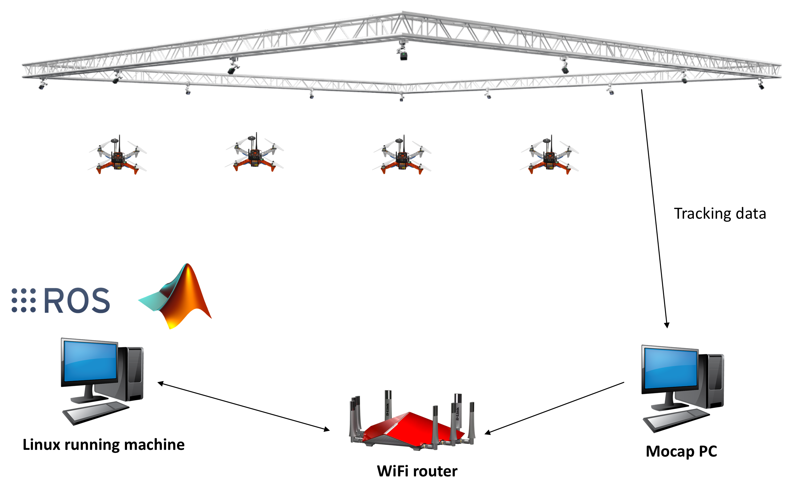
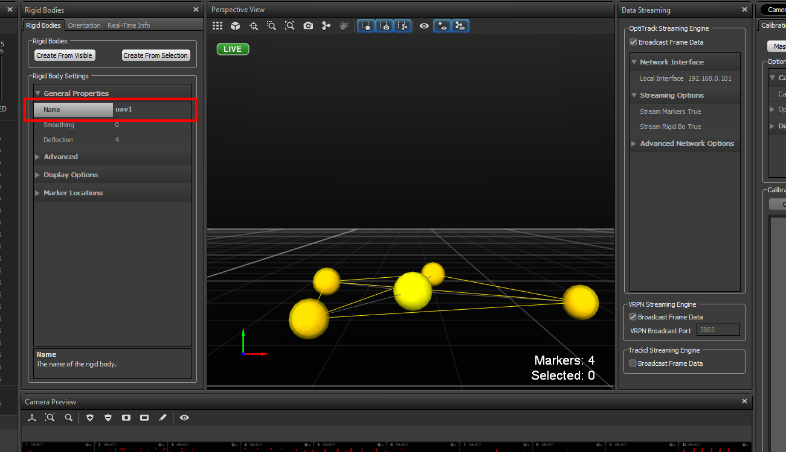
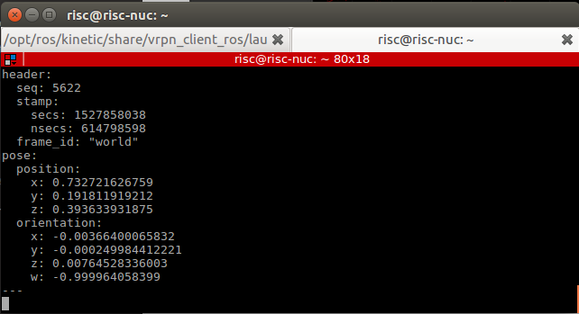
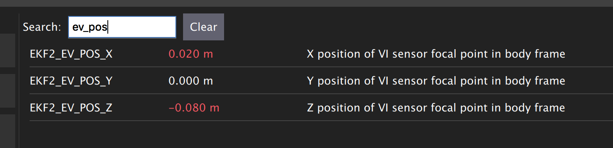

Indoor flying¶
System Architecture¶
In order to start flying the quadcopter indoor, we need the position and orientation feedback for this.
This section will guide you how to use OptiTrack Motion Capture System, how to stream position and orientation data to ROS, and feed it to your flight controller. Finally you will be able to fly your drone inside the arena.
{kind=link}
The overall systems has following main elements:
- OptiTrack Motion Capture System
- Object to be tracker, eg. quadcopter, ground vehicles.
- Controller
Let’s discuss each element in details
Motion capture system¶
OptiTrack motion capture system (Mocap hereinafter) works as follows. The overhead cameras send out pulsed infrared light using the attached infrared LEDs, which will then be reflected by markers on the object and detected by the OptiTrack cameras. Knowing the position of those markers in perspective of several cameras, the actual 3D position of the markers in the room can be calculated using triangulation. Simply Mocap provides high precision indoor local position and orientation estimation. Position is meters and orientation is in quaternion, which can be converted Euler angles in radians. In RISC lab we use twenty Prime17w cameras that are installed in the flying arena.
All cameras are connected to a single Mocap PC through network switches. Motive Optical motion capture software is installed on this PC.
Controller¶
Controllers are PCs or single board computer (SBC) which are used to control the objects in the flying arena. When a PC is used to control an object, this referred as OFFBOARD control. Also a controller can be a flight controller that runs an autopilot firmware to control a vehicle (e.g. quadcopter).
A companion computer is referred to SBC that is connected to a flight controller. Usually, SBC is used to perform more sophisticated/high computations that the flight controller can not. In other words, the flight controller is designed for low-level tasks, e.g. attitude control, motor driving, sensor data acquisition. However, the companion computer is used for high-level-control e.g. path planning, optimization.
Motion Capture Setup: OptiTrack¶
Camera calibration¶
Make sure that you remove any markers from the captured area and Area-C before performing calibration.
Make sure that you use clean markers on the Wanding stick.
The calibration involves three main steps
- Sample collections using the Wanding stick
- Ground setting using the L-shape tool
- Ground refinement
Follow this guide in order to perform the calibration.
Note
It is recommended to perform camera calibration on a weekly basis, or every couple of weeks.
Calibration video:
Motive setup¶
In this section, we mainly want to learn how to
- Create rigid bodies that represent objects to be tracked (e.g. quadcopter)
- Make an appropriate marker setup
Make sure that you have clean markers. Markers should not be placed in symmetric shape. Markers should not be close to each other.
Read this guide for detailed markers setup.
Follow this guide to create rigid bodies.
OptiTrack Interface to ROS¶
Getting positions of objects in the observable OptiTrack space to ROS works as follows.
Required Hardware¶
- Mocap machine. Runs Motive Motion Capture Software.
- Optitrack Motion Capture System
- WiFi router (5GHz recommended)
- A Linux based computer, normal PC or on-board embedded computer like ODROID XU4 will work. The Linux computer should be connected to the router either via Ethernet cable or WiFi connection.
Required Software¶
- Motive. It allows you to calibrate your OptiTrack system, stream tracking information to external entities.
- ROS Kinetic installed on your Linux computer.
- The package vrpn_client_ros for ROS to receive the tracking data from the Mocap computer.
Installation¶
Method 1. PC¶
Install vrpn_client_ros using following command.
sudo apt-get install ros-kinetic-vrpn-client-ros -y
Configure your IP address to be manual with the following values:
IP: 192.168.0.xxx (The *xxx* value shouldn't conflict with existing IP addresses)
Subnet Mask: 255.255.255.0
Gateway: 192.168.0.1
DNS Server: 8.8.8.8
Check this video to set static IP on Ubuntu.
Method 2. Odroid XU4¶
Download Ubuntu 16 with ROS Kinetic minimal or Ubuntu 16 Full with GUI. It’s highly recommended to use minimal image.
Flash image with Etcher to ODROID XU4 eMMC.
No need to install vrpn_client_ros package as it’s already included. Now connect your ODROID XU4 to monitor using HDMI cable. You will also need a keyboard.
After powering the ODROID you will prompt to enter username and password. It’s all odroid. Plug the WiFi Module 4 to the ODROID’s USB port.
Check the WiFi card number by typing following command
ifconfig -a
To set a static IP address open /etc/network/interfaces file for editing by following command
sudo nano /etc/network/interfaces
Modify the file so it matches your WiFi network. It should look similar to this.
auto wlan0 # The following will auto-start connection after boot
allow-hotplug wlan0 # wlan0 WiFi card number
iface wlan0 inet static
address 192.168.0.xxx # Choose a static IP, usually you change the last number only for different devices
netmask 255.255.255.0
broadcast 192.168.0.255
gateway 192.168.0.1 # Your router IP address
dns-nameservers 8.8.8.8
wpa-ssid "RISC-AreaC" # WiFi name
wpa-psk "risc3720" # WiFi password
Mocap computer settings¶
In Motive, choose View > Data Streaming from menu bar. Check the boxes Broadcast Frame Data in OptiTrack Streaming Engine and VRPN Streaming Engine sections. Create a rigid body by selecting markers of interest. Refer to picture below.

Make sure you either turn off the Windows Firewall or create outbound rules for the VRPN port (recommended).
Right click on the body created, choose Properties and rename it such that there is no spaces in the name.
{kind=link}
Streaming MOCAP Data¶
Check the IP address assigned to the Mocap machine, in our case it’s 192.168.0.101
In your ROS machine (PC or ODROID), where you want to get tracking data, run the vrpn_client_ros node as follows
roslaunch vrpn_client_ros sample.launch server:=192.168.0.101
Now you should be able to receive Mocap data under topic /vrpn_client_node/<rigid_body_name>/pose.
Open new terminal (CTRL + ALT + F2 on ODROID XU4) and try following command
rostopic echo vrpn_client_node/<rigid_body_name>/pose
You should get similar to this. More information on message type here.
{kind=link}
Feeding MOCAP data to Pixhawk¶

Intro¶
This tutorial shows you how to feed MOCAP data to Pixhawk that is connected to an ODROID, or an on-board linux computer. This will allow Pixhawk to have indoor position and heading information for position stabilization.
Hardware Requirements¶
- Pixhawk or similar controller that runs PX4 firmware
- ODROID (we will assume XU4)
- Serial connection, to connect ODROID to Pixhawk. You can use USB/FTDI cable. If you are using Pixhawk 2, then connect the serial cable to
TELEM2port. If you are using MindPX flight controller, just use a USB to micro-USB cable and connect it to USB/OBC port. - OptiTrack PC
- WiFi router (5GHz is recommended)
Software Requirements¶
- Linux Ubuntu 16 installed on ODROID XU4. A minimal image is recommended for faster executions.
Hint
A ready image for your eyes is available in here. This image has all the required software that is needed in this tutorial. You can use Etcher to flash your eMMC card with the provided .img file
Hint
Make sure that you expand your eMMC card after you flash a new image in order to use the full space of the eMMC card. Use Gparted Partition Editor on Linux to merge unallocated space with flashed space.
- ROS Kinetic installed on ODROID XU4. The above image already includes this
MAVROSpackage: Binary installation. Again, the above image includes this- Install
vrpn_client_rospackage. You can use the following command to install the package (assuming ROS Kinetic is used).
sudo apt-get install ros-kinetic-vrpn-client-ros -y
Again, this is included in the provided image
Now, you need to set your flight controller firmware PX4, to accept mocap data. PX4 has two state estimators, EKF2 (default) an extended Kalman filter, and LPE.
LPE estimator supports mocap data directly. EKF2 (recommended for this tutorial), however, (at the time of writing this tutorial) does not support directly. Instead, it can accept mocap data as vision-based data. We will explain how to setup both estimator to use mocap data.
Setting EKF2 Estimator for MOCAP Fusion¶
First choose EKF2 as your estimator from the System tab

Also make sure the you set the baudrate correctly SYS_COMPANION
In the EKF2 parameters tab, set EKF2_AID_MASK to not use GPS, and use vision position and yaw.

There are some delay parameters that need to set properly, because they directly affect the EKF estimation. For more information read this wiki

Choose the height mode to be vision

Set the position of the center of the markers (that define the rigid body in the mocap system) with respect to the center of the flight controller. +x points forward, +y right, +z down
{kind=link}
Setting LPE Estimator for MOCAP Fusion¶
You will need to set some parameters on Pixhawk as follows
Select LPE as your estimator. You can change that from the System tab in QGroundControl.
You will also need to use the highest baud rate for the serial connection. See below picture.

Use heading from mocap. Adjust the ATT_EXT_HDG_M parameter as follows. Restart might needed to activate LPE parameters in QGroundControl.

You will need to set the LPE_FUSION parameter to not to use GPS and not to use barometer, since most likely your mocap altitude is highly accurate. See following picture.
{kind=link}
Also, disable any altitude sensor e.g. LIDAR

Now Restart Pixhawk
Getting MOCAP data into PX4¶
Assuming your vrpn_client_node is still running from OptiTrack Interface to ROS on your ODROID, we will republish it to another topic by relay command.
You will need to run MAVROS node in order to connect ODROID to the flight controller. Separate terminal on ODROID (CTRL + ALT + F2/F3/F4)
roslaunch mavros px4.launch fcu_url:=/dev/ttyUSB0:921600 gcs_url:=udp://@192.168.0.119:14550
ttyUSB0 should match the serial port ID in your ODROID. gcs_url:=udp://@192.168.0.119:14550 is used to allow you to receive data to QGroundControl on your machine (that has to be connected to the same WiFi router). Adjust the IP to match your PC IP, that runs QGroundControl.
Relay the Mocap data to the flight controller
- If you are using LPE
rosrun topic_tools relay /vrpn_client_node/<rigid_body_name>/pose /mavros/mocap/pose
- If you use EKF2
rosrun topic_tools relay /vrpn_client_node/<rigid_body_name>/pose /mavros/vision_pose/pose
Check in QGroundControl that you got some message which means Mocap data is received by Pixhawk.
Now you are ready to use position hold/offboard modes.
Important
It is very important that you align the forward direction of your drone (robot) with the x-axis of your Mocap when you first define a rigid body. You can find the x-axis direction in the Mocap software, Motive.
Checking EKF2 Consistency via Log Files¶
It’s important to make sure that EKF2 estimator provides accurate enough estimates of the states for your flight controller to perform well. A quick way to debug that is through the log files.
The default log file format in PX4 is Ulog. Usually, the default setting, is that the logs start after arming the vehicle and stopped after disarm. You can change it, so it logs after you power controller.
- Use QGC to download
Ulogfile you wish to analyze - Download the FlightPlot software to open your logs.
- Plot the fields
ekf2_innovations_0.vel_pos_innov[3],ekf2_innovations_0.vel_pos_innov[4],ekf2_innovations_0.vel_pos_innov[5]
Those are the innovations on the x/y/z position estimates reported by the EKF2. They should very small values, (ideally zero!), see the picture below for reasonable values. If those values are large, then EKF2 is not providing accurate estimation. This is most likely because of the inconsistency of timestamps of the fused measurements. For that, you will need to start adjusting the EKF2_<sensor>_DELAY parameters that affect the position estimates. For example, if you are using Mocap, then you will need to adjust EKF2_EV_DELAY. It should be decreased if you are feeding Mocap data at high rate.

Flying¶
Intro¶
Now it’s time to fly your drone in the cage!
We will need a PC running Linux with Joystick connected to it. To establish ODROID communication with that PC, we will setup ROS Network. PC that runs Joystick node will be the ROS Master. The logic is the same as in the Software in the Loop simulator. The joystick commands will be converted to position setpoints and will be published to /mavros/setpoint_raw/local node. Finally MAVROS will send setpoints to autopilot (real flight controller on your drone).
Setup a ROS Network¶
- First let’s set PC running Linux to be ROS Master by editing
.bashrcfile. Open terminal and open.bashrcfile for editing.
gedit ~/.bashrc
- Add following lines to the end of the file. Both IP adresses are the same and represents IP address of the PC.
export ROS_MASTER_URI=http://192.168.0.119:11311
export ROS_HOSTNAME=192.168.0.119
Make sure you source the .bashrc file after this.
- Log into a ODROID to get access to a command-line over a network.
ssh odroid@192.168.0.116
It will prompt to enter password, if you use minimal image provided then it’s odroid.
- We need to edit
.bashrcfile on ODROID as well.
nano .bashrc
- Add the following lines to the end of the file. First IP address belongs to PC, and the second one to ODROID.
export ROS_MASTER_URI=http://192.168.0.119:11311
export ROS_HOSTNAME=192.168.0.116
To save file, press Alt+X, press Y, hit Enter. Source the .bashrc file.
ODROID commands¶
- Run on ODROID
vrpn_client_rosas follows (repeated here for your convenience):
roslaunch vrpn_client_ros sample.launch server:=192.168.0.101
- Open another tab, log into ODROID again and run MAVROS:
roslaunch mavros px4.launch fcu_url:=/dev/ttyUSB0:921600 gcs_url:=udp://@192.168.0.119:14550
Linux PC commands¶
- On Linux PC open new tab, relay positions from Mocap to MAVROS (assuming you are using EKF2).
rosrun topic_tools relay /vrpn_client_node/<rigid_body_name>/pose /mavros/vision_pose/pose
It’s important at this stage to check if setpoints are published to /mavros/vision_pose/pose by rostopic echo. If you see setpoints are published then move to next step.
- Now modify
setpoints_node.pyandjoystick_flight.launchto the following states. Try to find and understand what’s different from code in SITL files.
File setpoints_node.py:
#!/usr/bin/env python
# ROS python API
import rospy
# Joy message structure
from sensor_msgs.msg import Joy
# 3D point & Stamped Pose msgs
from geometry_msgs.msg import Point, PoseStamped
# import all mavros messages and services
from mavros_msgs.msg import *
from mavros_msgs.srv import *
# Flight modes class
# Flight modes are activated using ROS services
class fcuModes:
def __init__(self):
pass
def setArm(self):
rospy.wait_for_service('mavros/cmd/arming')
try:
armService = rospy.ServiceProxy('mavros/cmd/arming', mavros_msgs.srv.CommandBool)
armService(True)
except rospy.ServiceException, e:
print "Service arming call failed: %s"%e
def setDisarm(self):
rospy.wait_for_service('mavros/cmd/arming')
try:
armService = rospy.ServiceProxy('mavros/cmd/arming', mavros_msgs.srv.CommandBool)
armService(False)
except rospy.ServiceException, e:
print "Service disarming call failed: %s"%e
def setStabilizedMode(self):
rospy.wait_for_service('mavros/set_mode')
try:
flightModeService = rospy.ServiceProxy('mavros/set_mode', mavros_msgs.srv.SetMode)
flightModeService(custom_mode='STABILIZED')
except rospy.ServiceException, e:
print "service set_mode call failed: %s. Stabilized Mode could not be set."%e
def setOffboardMode(self):
rospy.wait_for_service('mavros/set_mode')
try:
flightModeService = rospy.ServiceProxy('mavros/set_mode', mavros_msgs.srv.SetMode)
flightModeService(custom_mode='OFFBOARD')
except rospy.ServiceException, e:
print "service set_mode call failed: %s. Offboard Mode could not be set."%e
def setAltitudeMode(self):
rospy.wait_for_service('mavros/set_mode')
try:
flightModeService = rospy.ServiceProxy('mavros/set_mode', mavros_msgs.srv.SetMode)
flightModeService(custom_mode='ALTCTL')
except rospy.ServiceException, e:
print "service set_mode call failed: %s. Altitude Mode could not be set."%e
def setPositionMode(self):
rospy.wait_for_service('mavros/set_mode')
try:
flightModeService = rospy.ServiceProxy('mavros/set_mode', mavros_msgs.srv.SetMode)
flightModeService(custom_mode='POSCTL')
except rospy.ServiceException, e:
print "service set_mode call failed: %s. Position Mode could not be set."%e
def setAutoLandMode(self):
rospy.wait_for_service('mavros/set_mode')
try:
flightModeService = rospy.ServiceProxy('mavros/set_mode', mavros_msgs.srv.SetMode)
flightModeService(custom_mode='AUTO.LAND')
except rospy.ServiceException, e:
print "service set_mode call failed: %s. Autoland Mode could not be set."%e
# Main class: Converts joystick commands to position setpoints
class Controller:
# initialization method
def __init__(self):
# Drone state
self.state = State()
# Instantiate a setpoints message
self.sp = PositionTarget()
# set the flag to use position setpoints and yaw angle
self.sp.type_mask = int('010111111000', 2)
# LOCAL_NED
self.sp.coordinate_frame= 1
# We will fly at a fixed altitude for now
# Altitude setpoint, [meters]
self.ALT_SP = 1
# update the setpoint message with the required altitude
self.sp.position.z = self.ALT_SP
# Instantiate a joystick message
self.joy_msg = Joy()
# initialize
self.joy_msg.axes=[0.0, 0.0, 0.0]
# Step size for position update
self.STEP_SIZE = 2.0
# Fence. We will assume a square fence for now
self.FENCE_LIMIT = 1.0
# A Message for the current local position of the drone
self.local_pos = Point(0.0, 0.0, 0.0)
self.modes = fcuModes()
# Callbacks
## local position callback
def posCb(self, msg):
self.local_pos.x = msg.pose.position.x
self.local_pos.y = msg.pose.position.y
self.local_pos.z = msg.pose.position.z
## joystick callback
def joyCb(self, msg):
self.joy_msg = msg
# If button 1 on joystick is pressed
if msg.buttons[0] > 0:
self.modes.setArm()
# If button 2 on joystick is pressed
if msg.buttons[1] > 0:
self.modes.setAutoLandMode()
# If button 3 on joystick is pressed
if msg.buttons[2] > 0:
self.modes.setOffboardMode()
# If button 11 on joystick is pressed
if msg.buttons[10] > 0:
self.modes.setDisarm()
## Drone State callback
def stateCb(self, msg):
self.state = msg
## Update setpoint message
def updateSp(self):
x = -1*self.joy_msg.axes[1] # negative one might be changed if direction is reverse
y = -1*self.joy_msg.axes[0]
self.sp.position.x = self.local_pos.x + self.STEP_SIZE*x
self.sp.position.y = self.local_pos.y + self.STEP_SIZE*y
# Main function
def main():
# Initiate node
rospy.init_node('setpoints_node', anonymous=True)
# Flight mode object
# controller object
cnt = Controller()
# ROS loop rate, [Hz]
rate = rospy.Rate(20.0)
# Subscribe to drone state
rospy.Subscriber('mavros/state', State, cnt.stateCb)
# Subscribe to drone's local position
rospy.Subscriber('mavros/local_position/pose', PoseStamped, cnt.posCb)
# subscribe to joystick topic
rospy.Subscriber('joy', Joy, cnt.joyCb)
# Setpoint publisher
sp_pub = rospy.Publisher('mavros/setpoint_raw/local', PositionTarget, queue_size=1)
# Some lines deleted from SITL code
# We need to send few setpoint messages, then activate OFFBOARD mode, to take effect
k=0
while k<10:
sp_pub.publish(cnt.sp)
rate.sleep()
k = k+1
# Activate OFFBOARD mode
cnt.modes.setOffboardMode()
# ROS main loop
while not rospy.is_shutdown():
cnt.updateSp()
sp_pub.publish(cnt.sp)
rate.sleep()
if __name__ == '__main__':
try:
main()
except rospy.ROSInterruptException:
pass
File joystick_flight.launch:
<launch>
<arg name="joy_dev" default="/dev/input/js0"/>
<node pkg="joy" type="joy_node" name="joy_node" required="true" output="screen">
<param name="dev" type="string" value="$(arg joy_dev)" />
</node>
<node pkg="mypackage" type="setpoints_node.py" name="setpoints_node" required="true" output="screen">
</node>
</launch>
- Make sure you give permissions to the joystick.
Danger
Keep the transmitter nearby to engage the Kill Switch trigger in case something will go wrong.
- Now run in a new terminal your launch file
roslaunch mypackage joystick_flight.launch
Joystick control¶
BUTTON 1 - Arms the quadcopter
BUTTON 3 - Switches quadcopter to OFFBOARD flight mode. It should takeoff after this.
BUTTON 2 - Lands the quadcopter
BUTTON 11 - Disarms the quadcopter
Enjoy your flight.